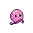
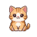
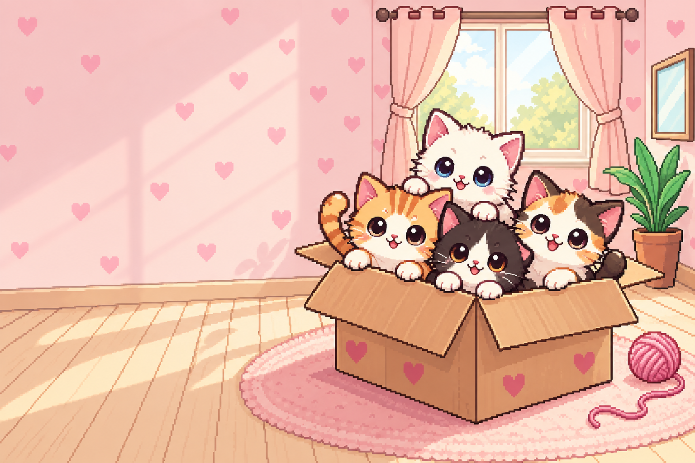
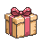
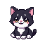
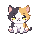
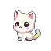

MAIS UM MOTIVO PARA VOLTARUma coleção de ronrons
Descubra nove tipos de gatinhos e suas raridades. Dos mais comuns aos brilhantes, cada chegada pode trazer uma surpresa.
SEU NOVO CANTINHO FELINO
Um clique, um gatinho, um carinho. Transforme uma simples caixa em um lar cheio de companhia — no seu ritmo.
Para Windows / Português, English & Español

Pequenos pixels.
POUCO A POUCO, PATINHA A PATINHA
Chame novos gatinhos, acumule ronrons e deixe a caixa cada vez mais aconchegante. Há sempre um novo amigo para descobrir.

Uma sala só sua, com companhia de sobra.
Clique para ganhar ronrons, receba gatinhos e invista em melhorias. De almofadas a casinhas, cada conquista deixa esse cantinho mais especial.

MAIS UM MOTIVO PARA VOLTARDescubra nove tipos de gatinhos e suas raridades. Dos mais comuns aos brilhantes, cada chegada pode trazer uma surpresa.

UMA PAUSA BEM ACOMPANHADAEncontre pares no jogo da memória, pule obstáculos na Corrida do Laranjinha e descubra os gatinhos do Gatominado.
Complete tarefas do diário, preencha seu álbum de lembranças e organize os momentos de foco e descanso com o Pomodoro.
UMAS CARINHAS QUE VOCÊ VAI CONHECER
Cada gatinho tem seu charme. E sua caixa tem espaço para todos.
O clássico irresistível.

Elegância de patinhas.
Uma bolinha de fofura.

Três cores, muito charme.

Uma descoberta especial.
Esses são só alguns dos seus futuros companheiros.
DÊ O PLAY. DEIXE O RONROM ENTRAR.
A salinha, os minijogos e os gatinhos na área de trabalho. Veja Caixa de Ronrons em movimento.
Gameplay dos modos completo e mascote · Trailer em português do Brasil
DIRETO DO JOGO
Veja os detalhes de perto. Toque em uma captura para ampliar.
ANTES DE ABRIR A CAIXA
É um jogo idle e incremental de gatinhos. Você ganha ronrons com cliques e com a produção dos gatos, chama novos companheiros e compra melhorias para continuar expandindo sua caixa.
Seus gatinhos ficam em uma faixa na área de trabalho, acompanhando sua rotina. Pelo menu compacto, você acessa a loja, o álbum, os minijogos e outras funções do jogo.
Sim! Há o jogo da memória, a Corrida do Laranjinha, o Gatominado, pedidos dos gatinhos, tarefas do diário e um álbum de lembranças. O Pomodoro também ajuda a marcar seus períodos de foco e descanso.
O jogo tem interface em português do Brasil, inglês e espanhol.
Esta página é a apresentação do jogo. Caixa de Ronrons é um aplicativo para Windows; o jogo completo e o modo mascote funcionam no computador.
caixa deronrons.